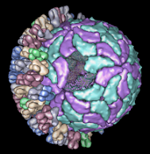

Multiscale Models facilitates exploration of macromolecular assemblies, especially large, complicated structures such as viral capsids and ribosomes, by:
Software extensions to UCSF chimera for interactive visualization of large molecular assemblies. Goddard TD, Huang CC, Ferrin TE. Structure. 2005 Mar;13(3):473-82.Multiscale Models is under active development, and suggestions for improvements are welcome (send to chimera-users@cgl.ucsf.edu).
There are several ways to start Multiscale Models, a tool in the Higher-Order Structure category. When a VIPER file is read, Multiscale Models is automatically started and used to construct the virus capsid.
The dialog has three sections:
Contents are described below in an order reflecting the general work flow.It is first necessary to open a PDB file containing either the coordinates for an entire multimeric complex (such as a ribosomal subunit) or coordinates for a lower-order structure and the matrix information needed to generate a multimer.
Under Models from molecules and matrices, the Multimer setting should be adjusted based on the types of matrix information present in the file. Options are:
Clicking Make models generates the multimer. Additional copies are shown as surfaces, while the display of the original chains is kept the same. However, the original chains (those with loaded atoms) can be selected and shown in the surface style too. The surfaces of all copies of a given chain are colored alike. The colors are assigned automatically, but can be changed in the Act on selected chains section.
The surfaces of all chains in the multimer are opened as a single model. The set of atomic coordinates first opened remains present, although the atoms may be hidden depending on the display style. Additional copies of the atomic coordinates will be loaded as needed for various display styles. The surface model and all copies of the PDB model comprise the multiscale model.
Delete selected models deletes each multiscale model with at least one chain selected, except for the single PDB model that was first opened. Although the PDB model is undisplayed, it can be used to remake the multiscale model.
Surfaces generated by Multiscale Models are usually low resolution, although higher resolutions can be specified. Low-resolution surfaces are efficient for display because they are graphically simple and require much less memory than the corresponding atomic coordinates. Resolution and other surface parameters can be adjusted in the Act on selected chains section. Surface display style, color, and transparency can also be adjusted with the main Chimera Actions menu.
The Multiscale Models dialog does not act on standard molecular surfaces, and several Chimera commands that act on molecular surfaces do not affect surfaces from Multiscale Models. Although a surface created by Multiscale Models with resolution set to 0 will have the same geometry as a molecular surface, it is not implemented in the same way.
Another way to show a low-resolution surface for atomic coordinates is to calculate a density map from the coordinates with molmap and display an isosurface of that density.
By default, the structural hierarchy contains three levels: PDB chain, PDB molecule, and multimer. To define a different set of levels, it is necessary to write a Python script to create the multiscale model instead of using the Make models button. Plans are to develop a user interface for defining the hierarchy.
The default levels sometimes correspond poorly to biologically significant levels of structure. For example, the bluetongue virus capsid (2btv, see the figure) is a two-layered structure, with an outer shell made up of trimers in five symmetry classes and an inner shell composed of dimers. The PDB file contains 17 chains comprising one asymmetric unit of the full virus shell, which is a 60-mer. Levels such as shell, dimer, trimer, and trimer class would be useful in this case. The Python script bluetongue.py loads 2btv and creates the multiscale model with these levels of structure.
A chain can be selected by picking its surface in the same way that atoms and bonds are picked (by default, with Ctrl-left mouse button click). If the Shift key is held down at the same time, the selection is added to (or subtracted from, if already selected) the previous selection rather than replacing it. Even though a single chain may appear as disjoint segments, the entire chain is selected, as indicated by highlighting of the surface.
When a chain has been selected by picking its surface, its constituent atoms and bonds are not selected. However, if the surface or any atoms or bonds within the chain are selected, Multiscale Models considers the chain selected. Even though the chain selection highlighting is only visible on the surface, the chain remains selected when shown in other display styles.
The Select chains section provides several ways to adjust the selection:
Buttons in the Act on selected chains section control how chains are displayed. Display styles, color, and transparency can also be adjusted with the main Chimera Actions menu.
Show and Hide display and undisplay surfaces, respectively; Hide all styles undisplays all display styles. This can be done for the Selected chains or for Other chains (the unselected chains within each multiscale model containing at least one selected chain). The rest of the section affects only the selected chains.
The Style for display can be
Color and Transparency apply to surfaces only (although there are buttons to color Atoms and Ribbons to match). Clicking the color well allows the color to be adjusted with the Color Editor. Transparency can also be adjusted using the Color Editor (opacity = A = 1 - transparency) or by typing a value in the Transparency field and pressing return (Enter). Transparency can range from 0 to 1; values below or above the range are treated as 0 or 1, respectively.
The Resolution (8 by default) controls the level of detail in a surface; a higher number gives a lower resolution. A low-resolution surface is made by counting the atoms in each cell of a three-dimensional grid and then making an isosurface of this occupancy map. The Resolution is the grid spacing in display units (usually Å). The isosurface is smoothed to reduce artifacts associated with using an arbitrarily aligned grid.
Setting the Resolution to 0, however, triggers calculation of a solvent-excluded molecular surface instead of an isosurface, based on the current VDW radii and New Surfaces preferences for probe radius, vertex density, and disjoint surfaces. This Multiscale Models molecular surface is not affected by the threshold and smoothing parameters and will not be updated to reflect any subsequent changes in the underlying atoms or their VDW radii.
It is necessary to press return (Enter) or click Resurface to recalculate the surface after changes in Resolution or the numerical parameters described below.
The checkbutton marked "..." reveals additional adjustable parameters:
Atomic coordinates are loaded for the PDB model first opened, but additional copies of the coordinates are loaded only as needed, when display styles other than surfaces are shown.
When possible, copies are made from the coordinates already in memory rather than by opening the original input file multiple times. If all copies of the atomic coordinates have been deleted, however, Chimera will try to open the original input PDB file again. If the file no longer exists in the same location, an error message will appear. There is currently no way of indicating that the file is available in a different location. Solutions are to restore the file to its former location or, in the context of a saved session, to change the location information within the session file before restarting.
Sometimes an excessive amount of coordinate copying is inadvertently set in motion. A dialog enabling the process to be halted will appear after 5 seconds of coordinate copying. Clicking Stop halts copying after the copy in progress is complete.